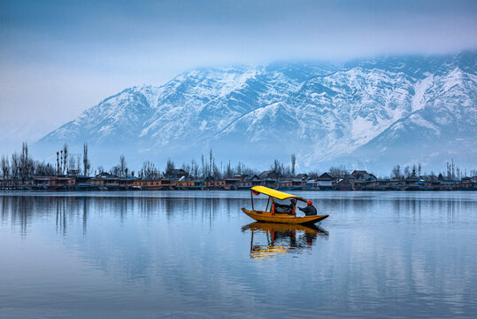
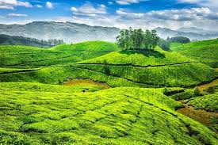

Name of place |
Image of place |
Description |
More information |
taj-Mahal |
 |
The Taj Mahal is an ivory-white marble mausoleum on the south bank of the Yamuna river in the Indian city of Agra. |
Taj Mahal Wikipedia |
Sri-nagar |
 |
The capital city of Srinagar is located 1585 meters above sea level. |
Sri-nagar Wikipedia |
Gateway Of India |
 |
The Gateway of India is an arch monument built during the 20th century in Bombay, India. |
Gateway Of India Wikipedia |
Goa |
 |
Goa is a state in western India with a population of approximately 1.5 million as of 2021. |
Goa Wikipedia |
Ooty |
 |
Ooty was made a municipality in 1866, and civic improvements including roads, drainage, and water supply from the Marlimund and Tiger Hill reservoirs were added through Government loans |
Ooty Wikipedia |